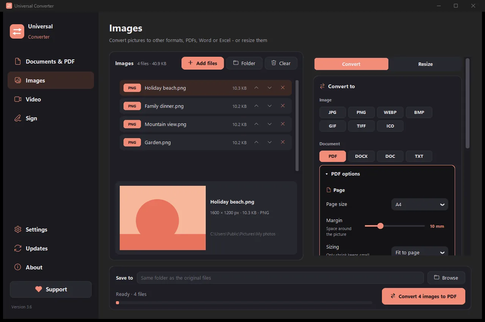
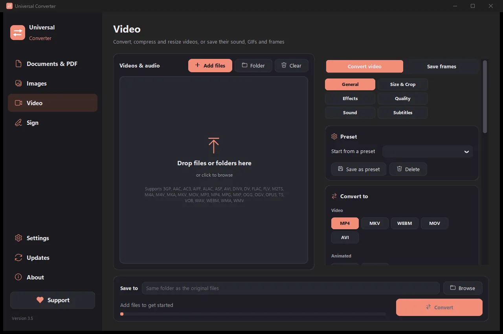
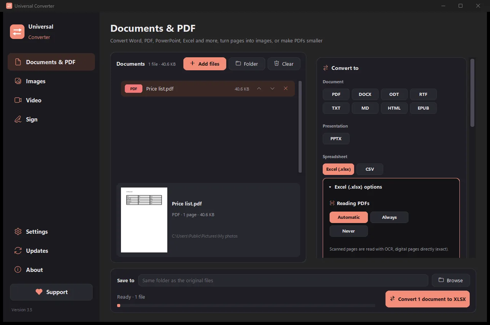
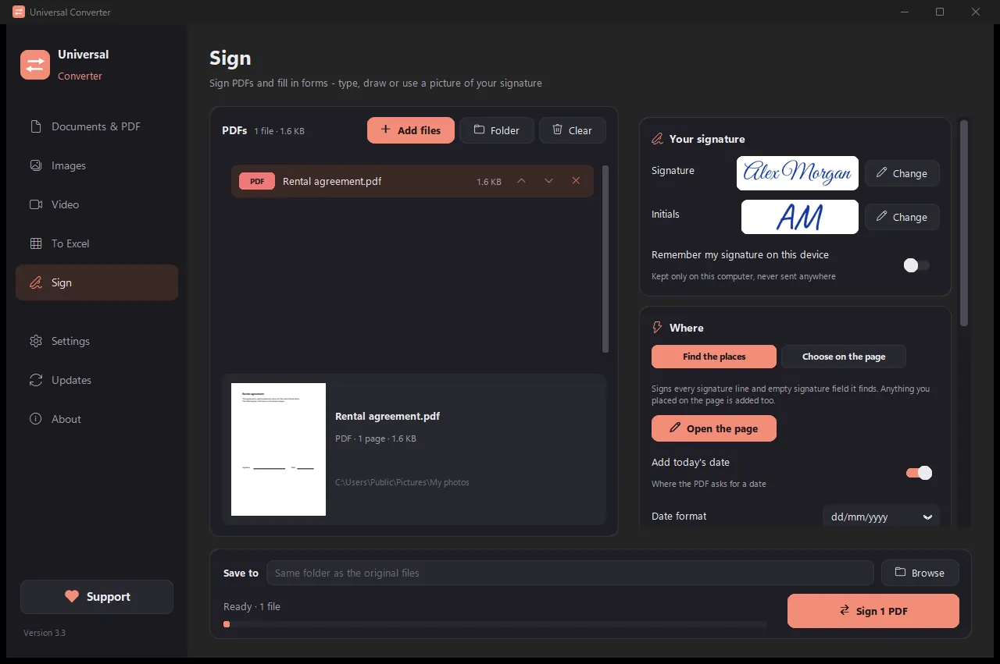
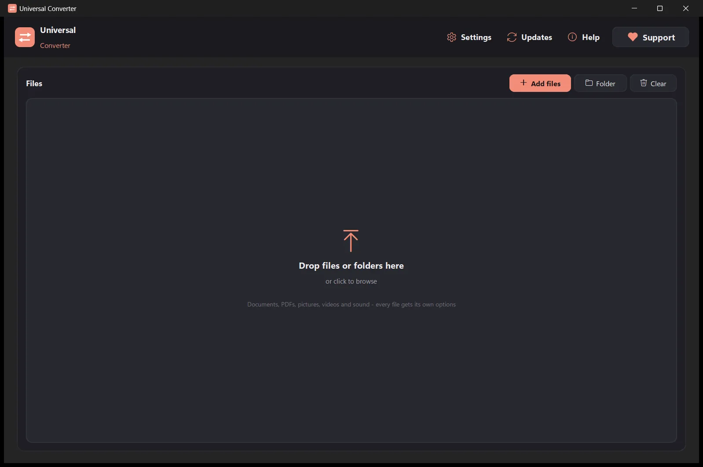

Convert your files on your own device
Images, documents, video and audio, PDFs and tables to Excel, all in one app. Nothing is uploaded: your files never leave your device.
How to install and update
- Open the downloaded .dmg and drag Universal Converter into Applications.
- Open the app. The first time, macOS blocks it because it isn't signed by Apple: click Done.
- Open System Settings > Privacy & Security, scroll down, click Open Anyway and enter your password. You only do this once.
Updates: if you allow it when the app first opens, it checks for new versions each time it starts, verifies their digital signature and installs them when you choose.
How to install and update
- Tap Download for Android on your phone.
- Open the downloaded file. If Android asks, allow your browser or file manager to install apps.
- Tap Install.
Updates: when you open the app, it checks for a new version and tells you when one is ready. Download it the same way and install it over the old one; your settings are kept.
How to install and update
- Download the .AppImage file.
- Make it executable: right-click it, open Properties > Permissions and allow it to run as a program (or in a terminal: chmod +x Universal-Converter-*.AppImage).
- Double-click it. Nothing is installed: the app is this one file.
Updates: if you allow it when the app first opens, it checks for new versions each time it starts, verifies their digital signature and replaces the AppImage file where it is.

Private
Everything runs on your device. No uploads, no waiting in a queue, no size limits.
Free
Free to use, with no ads, no account and no watermark.
34 languages
English, Greek, Spanish, Italian, German, French, Portuguese (Portugal and Brazil), Polish, Russian, Arabic, Hebrew, Chinese, Japanese, Korean, Tamil, Afrikaans, Yoruba, Hausa, Hindi, Indonesian, Turkish, Vietnamese, Swedish, Dutch, Danish, Ukrainian, Czech, Romanian, Bulgarian, Norwegian, Malay, Filipino and Swahili.
Five tools in one window

Documents & PDF
Convert between PDF, Word, ODT, RTF, TXT, Markdown, HTML, EPUB, PowerPoint and Excel. Turn pages into images and combine several files into one PDF. Fonts, sizes and colours are kept. Make PDFs smaller, to the size you choose. Scans and filled-in forms become editable text and tables, laid out like the page. Tables, also without lines like on bank statements, come into Word as real tables, and old Word (.doc) and PowerPoint (.ppt) files open.
Images
Convert between JPG, PNG, WEBP, TIFF, BMP, GIF and ICO. Resize by pixels, percent or file size, combine pictures into a PDF or Word file, and read the text in pictures (OCR). PDFs can be added too: every page becomes a picture.

Video
Convert videos between MP4, MKV, WebM, MOV and AVI, and compress them, with AV1, H.265, H.264 or VP9. Trim, crop, rotate and resize, make GIFs, save frames as pictures, or keep just the sound as MP3, M4A, AAC, FLAC, WAV, AIFF, OGG, AC-3, MP2, WavPack, MKA, CAF or Opus. With several videos, each one can have its own settings. On Android: MP4, MKV, WebM, MOV or GIF, or the sound as MP3, M4A, AAC, OGG, Opus, FLAC, WAV, AIFF or MKA; trim, crop, rotate, resize and save frames.

Excel
Pull tables out of PDFs, scans and photos into Excel or CSV: bank statements, invoices, price lists. Reads Greek, English, Spanish and more than 30 other languages.

Sign
Sign PDFs and fill in forms. Type your name in a handwriting style, draw your signature or use a photo of it. Each PDF opens with the signature lines the app found marked: click or tap them, or wherever the signature, initials, date, text or ticks go. Sign many files at once; the originals stay untouched.
- Uses your graphics card for video when it can: usually 5 to 20 times faster.
- Drag in whole folders: every file is converted in one go.
- One screen for every file: add documents, pictures and videos together, and each one gets its own options.
- Tells you about new versions; on Windows, Mac and Linux it can install them for you, digitally verified.
- Light and dark look, to match your device.
How it works
- Open Universal Converter.
- Drag your files or a whole folder into the window, or click Add files.
- Click Convert. The new files are saved next to the originals, or in the folder you choose.

What it can do
- Convert a PDF to Word
- Convert Word documents to PDF
- Combine several files into one PDF
- Compress a PDF to a size you choose
- Compress a PDF to 100 KB, 200 KB or any size for online forms
- Convert PDF pages to JPG images
- Turn a scanned document into an editable Word file
- Convert pictures between JPG, PNG, WEBP and more
- Resize pictures or shrink them to a file size
- Resize a photo or signature to 20 KB, 50 KB or exact pixels
- Combine photos into one PDF
- JPG to PDF under 100 KB
- Copy the text from a picture (OCR)
- Compress a video without uploading it
- Convert videos between MP4, MKV, WebM, MOV and AVI
- Save the sound of a video as MP3
- Make a GIF from a video
- Pull tables from a PDF into Excel
- Convert a bank statement PDF to Excel
- Extract tables from PDF invoices into Excel
- Sign a PDF
- Fill in a PDF form
Questions
Is it really free?
Yes. Universal Converter is free to use, with no ads, no account and no time limit. If it helps you, you can support its development with a voluntary contribution, but you never have to.
Are my files uploaded anywhere?
No. Every conversion happens on your own device, so it also works without an internet connection. The app only goes online to check for updates, to download the text-recognition alphabets you choose and, if you allow it, to send anonymous error reports.
Is it safe to download?
Yes. Before they go on this page, the Windows, Mac, Linux and Android downloads of every version are scanned by about 60–70 antivirus engines on VirusTotal; the link under each download button opens that file's report. The app shows no ads and collects no personal data, and the Microsoft Store version is also checked and signed by Microsoft.
Windows shows a SmartScreen warning. Is that normal?
Yes. The installer isn't code-signed yet, so Windows doesn't recognise it. Choose "More info", then "Run anyway". Updates after that are digitally verified by the app itself. Or install it from the Microsoft Store, which shows no warning.
How do I open it on a Mac?
Open the downloaded file and drag Universal Converter into Applications. The app isn't signed by Apple, so the first time you open it macOS blocks it: click Done, then open System Settings > Privacy & Security, click "Open Anyway" and enter your password. You only do this once.
How do I install it on Android?
Download the APK on your phone, open it and allow the install when asked (Android 10 or newer). All 34 languages are built in; choose one in the app's Settings. The app tells you when there's a new version.
Which languages does it speak?
The app is in English, Greek, Spanish, Italian, German, French, Portuguese (Portugal and Brazil), Polish, Russian, Arabic, Hebrew, Chinese, Japanese, Korean, Tamil, Afrikaans, Yoruba, Hausa, Hindi, Indonesian, Turkish, Vietnamese, Swedish, Dutch, Danish, Ukrainian, Czech, Romanian, Bulgarian, Norwegian, Malay, Filipino and Swahili. You choose in the installer, or later in Settings.